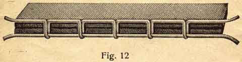
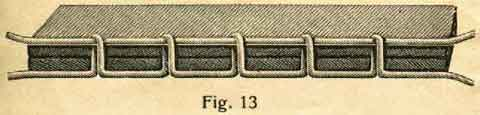
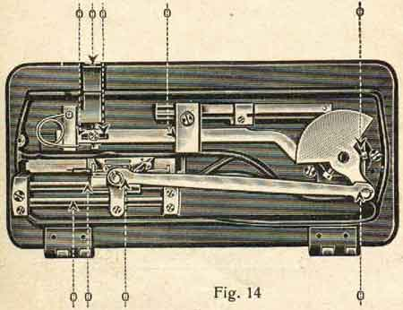
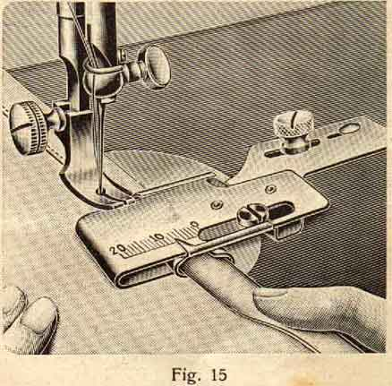
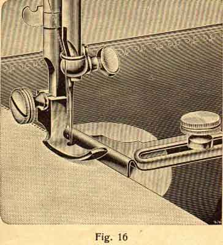
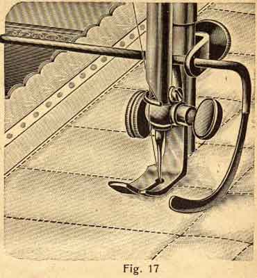
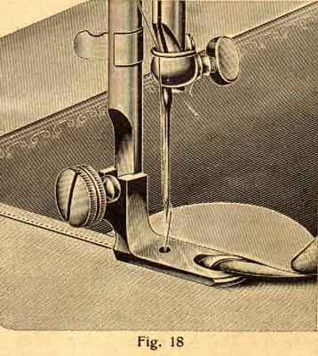
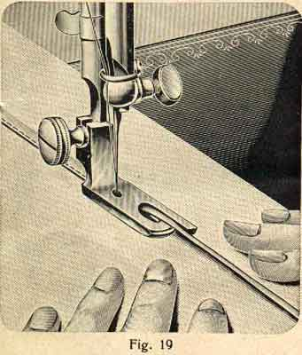

If small knots or loops (Fig 12) are seen underneath the material, the upper tension is too slack, as the upper thread is drawn through by the lower thread. In this case tighten the nut 5 Fig 5 on the front-plate of the machine (which produces the tension of the two disks) until these knots underneath disappear. At the same time you must make sure that the thread-tension in the shuttle is not too tight.

The tension of the shuttle-spring (like in Fig 6 screw A) must be regulated properly first.
If the regulation-nut of the tension-disk 5 (Fig 5) has been tightened too much, the knots and loops appear on top of the material, Fig 13, because the upper tension is too tight and the regulation-nut must be loosened a little or hte tension of the shuttle is not strong enough.

is available to press down the feeder on to the material. Thin and flimsy material requires but slight pressure whilst thick and tightly woven material requires stronger pressure. The pressure, which is obtained from a spring in the head of the machine, may be regulated by turning the nut 9 Fig 5 on the top of the machine behind the needle-bar clockwise if required stronger, or anti-clockwise if less pressure is required.
The presser-foot bar is properly regulated by the factory for shirting and similar material.
To obtain a regular and straight seam it is absolutely necessary to use perfect needles which must be neither blunt nor bent, and must be in proportion to the cotton as shown by the following table:
|
German
|
English
|
American
|
*Cloth* |
Cotton Thread No. |
Silk No.
|
Linen Thread No. |
|
6 7 |
00 0 |
8 9 |
embroidery work finest cotton cloth, linen, cambric etc. |
200 150 100 |
000 -- 00 |
--
|
|
8
|
B C |
11 13 |
very fine linen, calico, shirting, finest silks etc. |
100 -- 80 |
00 0 |
--
|
|
9
|
1/2
|
14
|
shirting, calico, cotton cloth, silk, all kinds of general work |
80 -- 60 |
0 A |
--
|
|
10
|
1 1 1/2 |
16 17 |
all kinds of heavy calico, thin woollen material, heavy silk etc. |
60 -- 40 |
B C |
90 -- 80 |
|
11 12 |
2 3 |
18 19 |
woollen material, children-suits and ladies coats etc. |
40 -- 30 |
D
|
70 -- 40 |
Owing to the perfect supervision in the factory, only light running machines are sent out. Should at any time a machine run heavy it can only be due to its not being properly oiled.
The more a machine is used the more often it must be oiled, if necessary several times a day. Only pure machine-oil free from acid and resin should be used, which can always be purchased. Bad oil will easily spoil the machine.
If the oil has become thick after a certain time owing to the machine having been idle for a long while, a few drops of paraffin oil (US = kerosene. AQ) should be put into each oil-hole and the machine worked quickly for a minute or two, during which the paraffin oil (kerosene) removes all the thick oil. Then wipe off all the overflowing paraffin oil and put a drop of pure machine-oil into all the oil holes. The latter are marked in red. Always use specially prepared sewing machine mineral oil, on no account use any vegetable oil. In fact oiling is required werever there is friction, especially in those places which are marked with 0 (Fig 14).

The needle-bar should be oiled at the upper as well as the lower end, but also very little and carefully, so as not to soil the material. Oil-holes are provided for all the parts that cannot be reached directly by the oil-can, and they are made conspicuous by being painted red.
The nickel-plated cover on the back of the arm can be opened when the inside parts want oiling.
*****************
After being quite familiar with the plain sewing and with the working of the machine generally, one can begin to learn to use the various attachments as described on the following pages.
is fastened to the machine. It serves chiefly for all ordinary plain sewing.
Fig. 15

This hemmer is fastened to the bed plate by means of the thumb-screw 1411. The material is folded for about 2 inches and pressed into the hemmer from the side until it folds itself to the desired width, then pushed under the needle and the presser-foot lowered on top of it, after which the sewing may be started. Care must be taken that the material enters the hemmer freeley. The adjusting of the hemmer is done by means of the small screw in the slit.
Fig. 16

is also fastened to the bed-plate with the thumb-screw and is used in connection with the edge sewing foot No. 1407 for making a seam parallel to the edge of the material and may be adjusted to the required width.
Fig. 17

is used for stitching all sorts of quilted material in regular rows and squares without it being bacassary to mark first the lines. It is fastened at the presser-bar by means of the thumb-screw clamp No. 1409. First make a straight seam, them move the material towards the right as far as the seams are to be apart and set the quilting guide to this width, so that its lower end passes along the various seams. In this way the various seams will all be at an equal distance from one another.
Fig. 18

Fasten it in the place of the common foot. Begin by folding the material for about 2 inches and pass this folded end into the hemmer up to the needle, lower the presser-bar and start sewing slowly. Care must be taken that the material passes very evenly into the hemmer. If the material is very soft and difficult to get into the hemmer, one should fasten a thread to the end and pull it through the hemmer as described above. The illustration shows how the material has to be held, so as to pass properly into the hemmer.
is used in exactly the same way as the narrow hemmer.
Fig. 19

is fastened exactly like the hemmer. In order to fell a seam, put the 2 pieces of material on top of each other, so that the lower one projects about 1/4 of an inch. The projecting edge is passed through the feller in a similar way as with the hemmer and is sewn on the upper material. After flattening out these two pieces of material thus sewn together, there remains a high seam as shown in the illustration, which must then be sewn down flat.
**********************